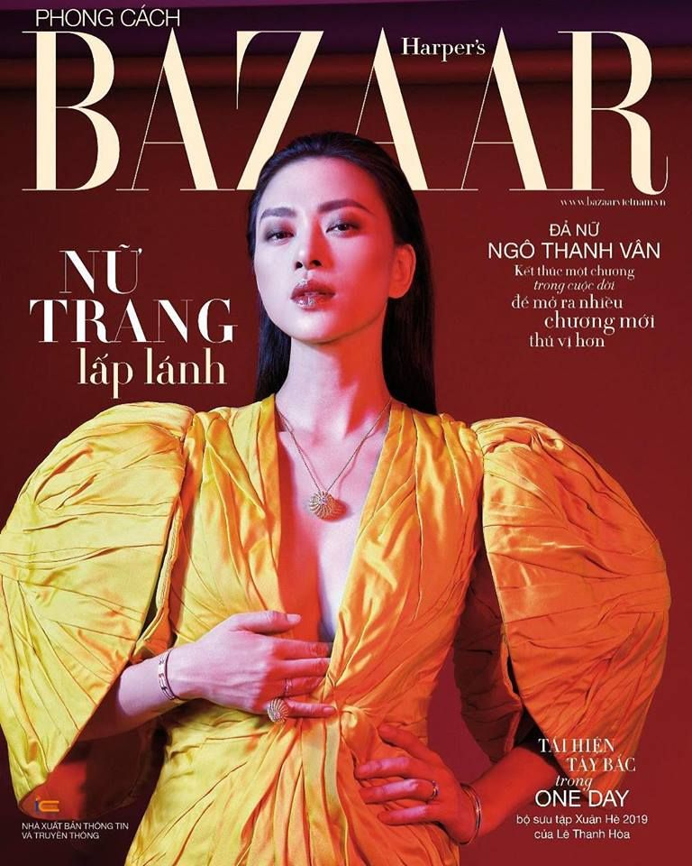
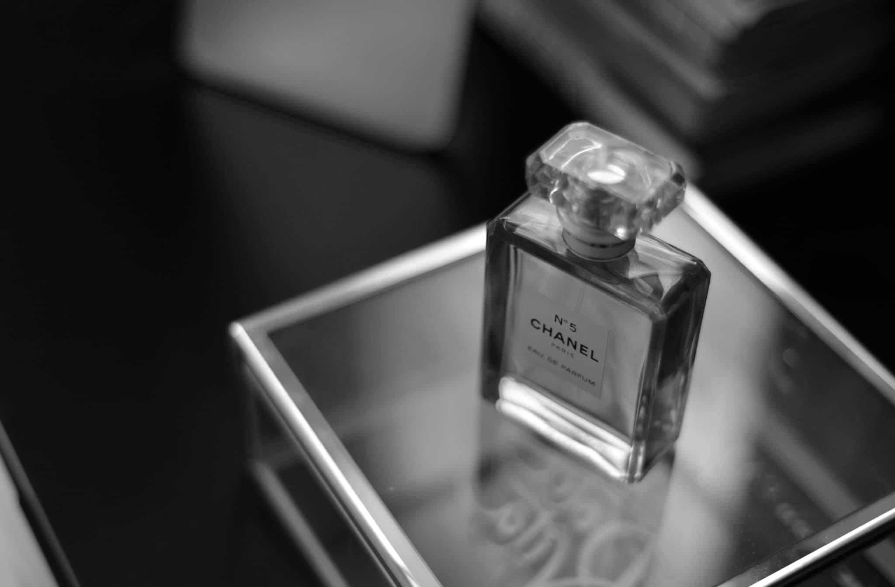
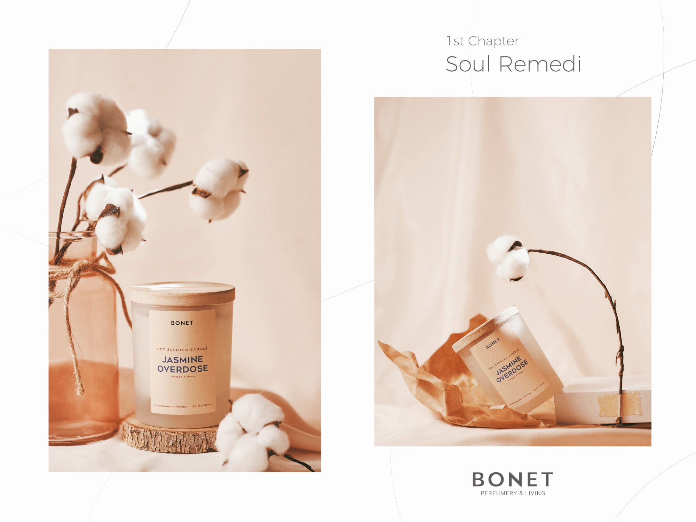
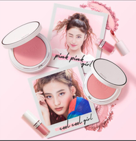
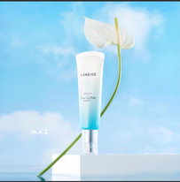
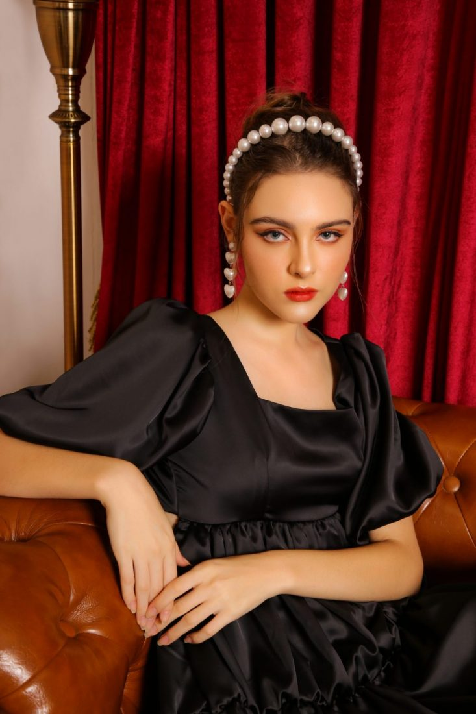
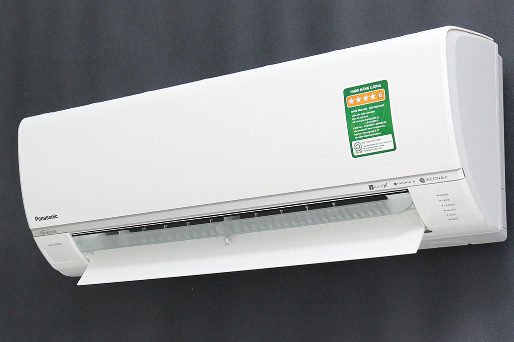
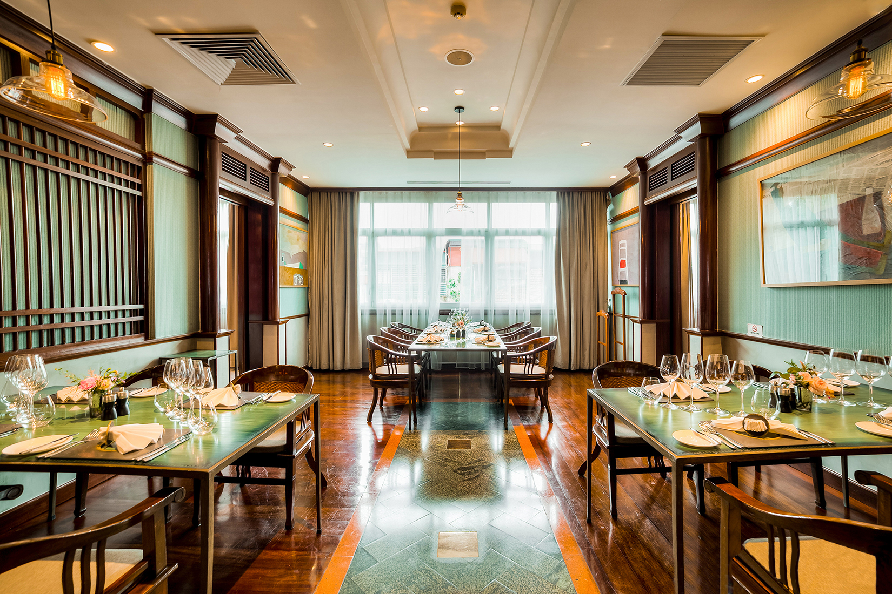

Bạn đang cần tìm nguồn cảm hứng cho công việc chụp ảnh của mình? Trong bài viết ngày hôm nay, Lynk Production sẽ giới thiệu đến bạn ba gương mặt đầy hứa hẹn trong làng nhiếp ảnh Việt - những người đang truyền tải tài năng, khiếu thẩm mỹ tinh tế của mình qua những tác phẩm, dự án mang đầy hơi thở đương đại.
hotographer đầu tiên mà bọn mình muốn nhắc đến là chị Karsten Đặng, chị tốt nghiệp trường University of the Arts London và hiện đang làm việc cho báo Harper’s Bazaar. Nhiếp ảnh của chị khám phá sự gợi cảm theo một cách siêu thực và tinh tế. Karsten nắm bắt được sự kết nối giữa bản thân và những người mẫu làm việc cùng mình. Ngoài kết hợp với những người nổi tiếng và người mẫu, chị Karsten được nhiều thương hiệu trong làng thời trang chọn mặt gửi vàng, có thể kể đến như Cartier, Chanel,...Tác phẩm của chị dễ dàng được tìm thấy trong một số ấn phẩm hàng đầu như ELLE, Bazaar, Her world.
 (Nguồn: https://www.facebook.com/karsten.dang)
Tiếp theo phải kể đến là anh Nguyễn Minh Anh - gương mặt thân quen của Lynk Production. Phong cách chụp ảnh của anh nghiêng về các product, food, commercial. Thế mạnh của anh là chụp ảnh trong studio và kết hợp hài hòa màu sắc cùng ánh sáng phức tạp để tạo ra những bức ảnh hoàn hảo. Đặc biệt là những bức hình với những mảng màu pastel sẽ gợi cho chúng ta cảm giác yên bình và cân bằng. Điều này cho thấy anh phù hợp với các buổi chụp hình sản phẩm làm đẹp như mỹ phẩm, nước hoa. Các khách hàng thương mại của anh bao gồm Tomford, Bonet, Laneige, M.O.I,... Ngoài ra, anh còn sở hữu một trang blog cá nhân đầy cảm hứng là https://www.maznguyen.com/lifestyle
  (Nguồn: https://www.maznguyen.com/lifestyle)
Nhiếp ảnh gia cuối cùng mà hôm nay Lynk muốn giới thiệu chính là anh Văn Nguyễn. Danh mục hình ảnh của anh ấy có hình ảnh quyến rũ nhưng phong cách rất tinh vi khi nói đến ánh sáng và bố cục.Các lĩnh vực mà anh chụp hầu hết liên quan đến thời trang, nội thất và máy công nghiệp. Bên cạnh đó, anh còn cộng tác với Vingroup - một thương hiệu hàng đầu tại Việt Nam.
  (Nguồn: https://mabustudio.com/mabu-portfolio/)
Trên đây là ba trong số nhiều nhiếp ảnh gia đã và đang cộng tác cùng Lynk suốt thời gian qua. Mỗi người đều có những thế mạnh riêng trong phong cách chụp ảnh. Nếu bạn vẫn còn lo lắng về nháy xịn cho dự án mình đang phụ trách thì có thể tham khảo bài viết này nhé!